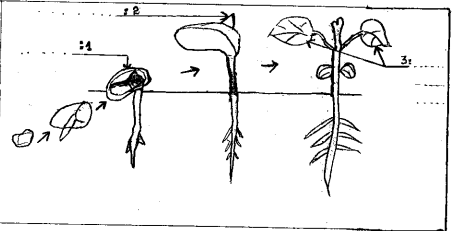
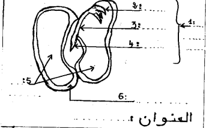
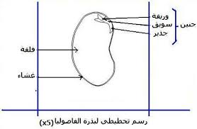
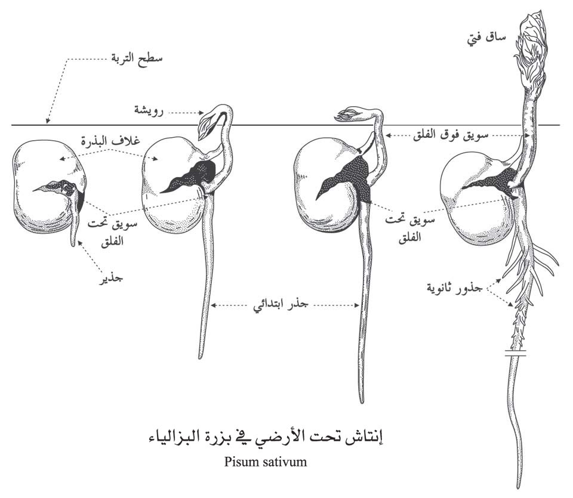

فرض تأليفي عدد 3 في علوم الحياة والأرض
المدرسة الإعدادية : زاوية الجديد ي بني خلاد
المستوى : الثامنة أساسي - الأستاذة : حنان بور قيبة
السنة الدراسية : 2023 / 2024
تعليمات عامة
- أجب بدقة على الأسئلة المطروحة.
- اعتن بجودة الخط وتنظيم الإجابة.
- الرسوم والبيانات يجب أن تكون واضحة ومقروءة.
الجزء الأول : 12 نقطة
التمرين عدد 1 (3 ن)
اختر الإجابة الصحيحة لكل سؤال :
1. الترتيب الصحيح لمراحل الإنتاش :
2. تتكون بذرة الفاصوليا من :
3. الظروف الخارجية للإنتاش :
4. النمو المتواصل الطولي :
5. الإنتاش :
6. مراحل نمو النبتة :
التمرين عدد 2 (3 ن)
أجب بخطأ أو صواب وأصلح الجمل الخاطئة :
| الجملة | صواب | خطأ | التصحيح (عند الخطأ) |
|---|---|---|---|
| زرع البذور في عمق التربة تمكن من الإنتاش | |||
| البذرة تحتوي على عناصر ضرورية لنمو الجنين | |||
| النمو هي تغيرات طبيعية تحدث للبذرة | |||
| يحدث النمو الطولي بواسطة البرعم القمي | |||
| يتبع الإنتاش النّمو | |||
| تمر النباتات المعمرة بالنمو المتواصل المتجدد |
التمرين عدد 3 (6 ن)
| الجزء | الوظيفة |
|---|---|
| اللحافة | |
| الفلقتين | |
| الجنين | |
| الشويقة | |
| الجذير | |
| البريعم |

الرسم:...

الرسم:...
الجزء الثاني : 8 نقاط
التمرين عدد 1 (3 ن)
أكمل الجدول :
| التجربة | النتيجة | الاستنتاج |
|---|---|---|
| بذور سليمة وناضجة | ||
| زرع بذرة أتلفت بالحشرات |
الفرضية : كمية من البذور وضعت في الثلاجة. فسّر عدم إنتاش البذرة.
التمرين عدد 2 (5 ن)
بالإعتماد على القياسات بالجدول : النمو الطولي لساق نبتة الجلبان :
| العمر بالأسبوع | 1 | 2 | 3 | 4 | 5 | 6 | 7 | 8 | 9 | 10 | 11 | 12 | 13 | 14 | 15 |
|---|---|---|---|---|---|---|---|---|---|---|---|---|---|---|---|
| النمو الطولي (صم) | 4 | 4.5 | 7.5 | 9 | 11 | 16 | 23 | 27.5 | 36 | 49 | 59 | 64 | 68 | 68 | 68 |
السرعة =
السرعة =
السرعة =
المعدل =
المنحنى البياني للنمو الطولي لساق نبتة الجلبان
الإصلاح النموذجي
الجزء الأول : التمرين عدد 1
1. الترتيب الصحيح : ب (إنتفاخ البذرة - نمو جذير - نمو الشويقة - نمو برعم)
2. بذرة الفاصوليا : ب (فلتان - لحافة - جنين)
3. الظروف الخارجية : ب (ماء - حرارة - تهوئة)
4. النمو المتواصل الطولي : أ (متواصل عند الحولية)
5. الإنتاش : أ (الجنين يتحول إلى نبيتة)
6. مراحل نمو النبتة : ب (الإنتاش - النمو - الإزهار - الإثمار)
التمرين عدد 2
1. خطأ - الصحيح : الزرع على عمق كبير يمنع وصول الأكسجين والضوء ويعيق الإنتاش.
2. صواب
3. خطأ - الصحيح : الإنتاش هو مجموعة التغيرات التي تطرأ على البذرة، أما النمو فهو الزيادة في الحجم والوزن.
4. صواب
5. صواب
6. خطأ - الصحيح : تمر النباتات المعمرة بنمو دوري (متجدد) وليس متواصلاً.
التمرين عدد 3
1) الربط : اللحافة → كـ الحماية؛ الفلقتين → توفير الغذاء للنمو؛ الجنين → يتحول إلى نبيتة؛ الشويقة → تنمو لتعطي ساق النبتة؛ الجذير → ينمو ليكون الجذر؛ البريعم → ينتج عنه أوراق أولية.
2) تعريف الإنتاش : هو مجموعة التغيرات التي تطرأ على البذرة لتحول الجنين إلى نبيتة.
3) عاملين داخليين : بذرة ناضجة وسليمة، خالية من الأمراض.
4) إكمال الرسمين :

الرسم 2 : 1 = جذر، 2 = سويقة، 3 = فلقة، 4 = ورقة أولية

الرسم 1 : أ = لحافة، ب = فلقة، ج = جنين
5) مرحلتين أوليتين : إنتفاخ البذرة، نمو الجذير.
6) عاملين لعدم الإنتاش : غياب الماء، حرارة غير ملائمة (أو بذرة تالفة).
الجزء الثاني : التمرين عدد 1
| التجربة | النتيجة | الاستنتاج |
|---|---|---|
| بذور سليمة وناضجة | إنتاش (نمو نبات) | البذور السليمة الناضجة قادرة على الإنتاش |
| زرع بذرة أتلفت بالحشرات | عدم إنتاش | البذور التالفة لا تنتش لأن الجنين تالف |
تفسير عدم إنتاش البذور في الثلاجة : بسبب انخفاض درجة الحرارة (الحرارة غير ملائمة) مما يوقف نشاط الأنزيمات ويمنع الإنتاش.
التمرين عدد 2
تحليل المنحنى : يظهر المنحنى ثلاث مراحل : مرحلة نمو بطيء (الأسابيع 1-4)، مرحلة نمو سريع (الأسابيع 5-12)، ثم مرحلة استقرار (ثبات الطول) من الأسبوع 13 إلى 15.
السرعات :
- من 1 إلى 8 : (27.5 - 4) / (8 - 1) = 23.5 / 7 ≈ 3.36 صم/أسبوع.
- من 8 إلى 13 : (68 - 27.5) / (13 - 8) = 40.5 / 5 = 8.1 صم/أسبوع.
- من 13 إلى 15 : (68 - 68) / 2 = 0 صم/أسبوع.
- معدل السرعة من 13 إلى 15 : 0 صم/أسبوع.
الاستنتاج : النمو الطولي يزداد تدريجياً ثم يتسارع ثم يتوقف عند بلوغ الطول النهائي.
المنحنى البياني مع التحليل